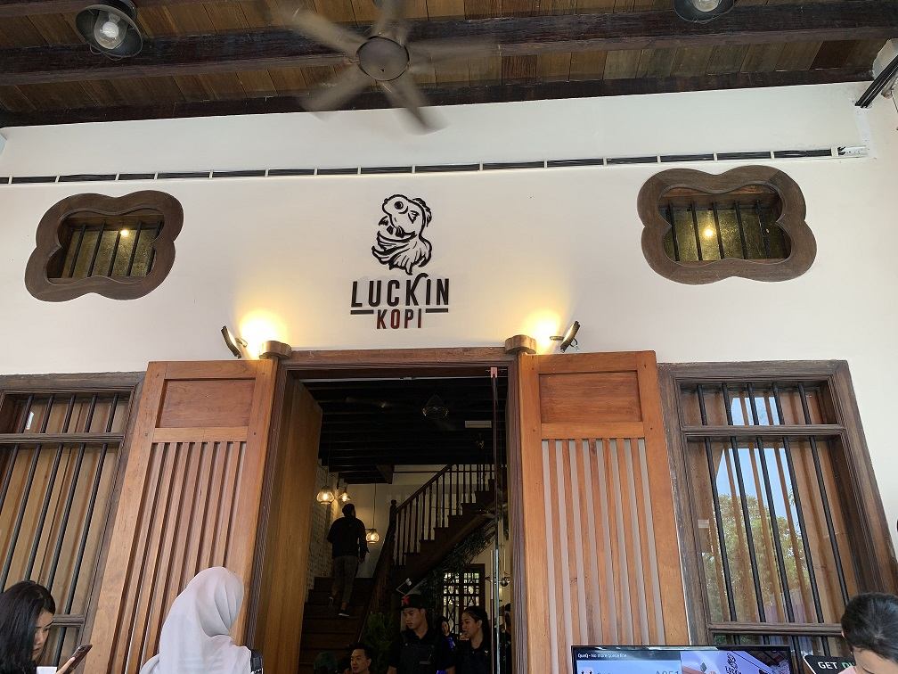

1.LUCKIN KOPI
PETALING STREET / Oct 28, 2020

Luckin Kopi aim to delight their guests with menu inspired from traditional asian foods made with freshest ingredients in a heritage surroundings restaurant with excellent services. They believe that they can connect through just one cup of kopi.
Located just 3 minutes walk from Pasar Seni MRT station, Luckin Kopi Cafe – the newest modern kopitiam behind Kwai Chai Hong (near Petaling Street KL) introduces a menu specializes in local street food that we are familiar with, plus unique delicacies fused with chef’s very own creativity.
Home-cooked delights like Salted Chicken Rice, Oyster Sauce Chicken Rice, Hot & Sour Soup, Herbal Chicken Soup make a noteworthy appearance on the menu too, ideal for diners who are looking for fuss-free comfort food. For Western-style and fusion options, check out Smoked Duck Carbonara, Aglio Olio Pasta, Sawadee Pasta, Salted Egg Pasta and Petai Pasta.
LOCATION: Jalan Panggong, 50000 Wilayah Persekutuan, Kuala Lumpur.
OPENING HOURS: 7 am - 9 pm (Everyday)
PRICE RANGE: below RM25

Image from Luckin Kopi FB
2.POKOK KL
PETALING JAYA / Oct 30, 2020
Situated amidst greenery, this daring All glass cafe offers carefully curated Selection of brunch items, fresh coffee and local delights.
Opening just in October 2018, Pokok KL has received much attentions from cafe hoppers and foodies alike, right from the first week – thanks to its glass house architecture.
For food, Pokok KL Cafe menu covers about 20 food options currently, such as soup & small bites (* heard truffle fries here is awesome!), breakfast platter, pasta, salad, nasi lemak and dessert, along with a croissant, pies, and other pastries.
LOCATION: MAHSA Avenue, Block B, Mahsa Prima International College (MPIC), Jalan Elmu off Jalan Universiti, 59100 Kuala Lumpur, Malaysia.
OPENING HOURS: 9 am - 9 pm (closed Monday)
PRICE RANGE: below RM35

Image from Pokok KL FB
3.THEREFORE
PETALING JAYA / Oct 31, 2020
Therefore is a contemporary casual cafe that brings people together for delicious bites and satisfying brews in a sleek, sophisticated space.
Therefore Cafe menu covers an interesting selection of fusion delicacies fused with creative twist, such as Mushroom Cappuccino, Egg Benedict with Pandan Waffles, Big Breakfast with Sambal Udang Kering Baked Beans, Nacho with Shredded Jackfruits, Pan-seared Salmon with Tempeh Herb Crust and Two-Colour Tom Yum Pasta.
If you still have rooms for dessert after main course, check out their Green Tea & Mint Panna Cotta with Black Sesame Praline and Money Bag Guarantee – Caramelised apple wrapped in classic vanilla crepe, sprinkled with cinnamon and salted Gula Melaka, served together with refreshing homemade coconut sorbet on vanilla crumble.
LOCATION: Lot 02-G, Menara Symphony, Jalan Professor Khoo Khay Khim, Seksyen 13, Petaling Jaya, Selangor.
OPENING HOURS: Sun, Mon - Thurs (9 am - 6 pm)
Fri - Sat (9 am - 10 pm)
PRICE RANGE: below RM50

Image from Therefore FB